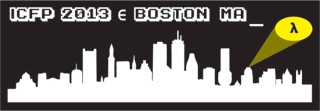

Principal Scientist
Galois, Inc.
| darais@galois.com | |
| @daviddarais | |
| @davdar | |
| CV | |
| when I'm free |
I'm currently a Principal Scientist at Galois, Inc.. My research addresses problems in software reliability through advances in program analysis, computer-checkable proofs, and their combination. Recently I have been working on new programming languages for data privacy and secure computation, and new verification techniques for software defined networking. I used to help run and still actively collaborate with the UVM PLAID Lab.
Publications
-
Zero Knowledge Static Program Analysis.
Zhiyong Fang, David Darais, Joe Near, Yupeng Zhang.
To appear in Computer and Communications Security (CCS). ACM, 2021.
[pdf] [abstract] -
Solo: Enforcing Differential Privacy Without Fancy Types.
Chike Abuah, David Darais, Joe Near.
Foundations of Computer Security (FCS). 2021.
-
Symphony: A Concise Language Model for MPC.
Ian Sweet, Ryan Estes, David Darais, David Heath, William Harris, Michael Hicks.
Foundations of Computer Security (FCS). 2021.
-
Verified Computation via Compilation to Abstract Machines.
Ryan Estes, David Darais, Joseph Near.
Foundations of Computer Security (FCS). 2021.
[pdf] [abstract] -
DDUO: General-Purpose Dynamic Analysis for Differential Privacy.
Chike Abuah, Alex Silence, David Darais, Joseph P. Near.
Computer Security Foundations (CSF). IEEE, 2021.
-
Improving Privacy-Preserving Deep Learning With Immediate Sensitivity.
Timothy Stevens, David Darais, Ben U Gelman, David Slater, Joseph Near.
Theory and Practice of Differential Privacy (TPDP). 2021.
-
Solo: Enforcing Differential Privacy Without Fancy Types.
Chike Abuah, David Darais, Joe Near.
Theory and Practice of Differential Privacy (TPDP). 2021.
-
DuetSGX: Differential Privacy with Secure Hardware.
Phillip Nguyen, Alex Silence, David Darais, Joseph P. Near.
Theory and Practice of Differential Privacy (TPDP). 2020.
[pdf] [abstract] [bibtex] [arXiv] -
Short Paper: Probabilistically Almost-Oblivious Computation.
Ian Sweet, David Darais, Michael Hicks.
Programming Languages and Analysis for Security (PLAS). ACM, 2020.
[pdf] [abstract] [bibtex] [ACM] -
Types and Abstract Interpretation for Authorization Hook Advice.
Christian Skalka, David Darais, Trent Jaeger, Frank Capobianco.
Computer Security Foundations (CSF). IEEE, 2020.
[pdf] [abstract] [bibtex] [IEEE] -
Abstracting Faceted Execution.
Kristopher Micinski, David Darais, Thomas Gilray.
Computer Security Foundations (CSF). IEEE, 2020.
[pdf] [abstract] [bibtex] [IEEE] -
A Language for Probabilistically Oblivious Computation.
David Darais, Ian Sweet, Chang Liu, Michael Hicks.
Principles of Programming Languages (POPL). ACM, 2020.
[pdf] [abstract] [bibtex] [ACM] [arXiv] [slides.key] [slides.pdf] -
Proof Carrying Network Code.
Christian Skalka, John Ring, David Darais, Minseok Kwon, Sahil Gupta, Kyle Diller, Steffan Smolka, Nate Foster.
Computer and Communications Security (CCS). ACM, 2019.
[pdf] [abstract] [bibtex] [ACM] -
Duet: An Expressive Higher-order Language and Linear Type System for Statically Enforcing Differential Privacy.
Joseph P. Near, David Darais, Chike Abuah, Tim Stevens, Pranav Gaddamadugu, Lun Wang, Neel Somani, Mu Zhang, Nikhil Sharma, Alex Shan, Dawn Song.
Object-oriented Programming, Systems, Languages, and Applications (OOPSLA). ACM, 2019.
«ACM SIGPLAN Distinguished Paper Award»
[pdf] [abstract] [bibtex] [ACM] [arXiv] [video] -
Constructive Galois Connections.
David Darais, David Van Horn.
Journal of Functional Programming (JFP). Cambridge University Press, 2019.
[pdf] [abstract] [bibtex] [JFP] [arXiv] -
Abstracting Definitional Interpreters.
David Darais, Nicholas Labich, Phúc C. Nguyễn, David Van Horn.
International Conference on Functional Programming (ICFP). ACM, 2017.
[pdf] [abstract] [bibtex] [ACM] [arXiv] [slides.pdf] [slides.key] [video] -
Constructive Galois Connections: Taming the Galois Connection Framework for Mechanized Metatheory.
David Darais, David Van Horn.
International Conference on Functional Programming (ICFP). ACM, 2016.
[pdf] [abstract] [bibtex] [ACM] [arXiv] [slides.pdf] [slides.key] [video] -
Compositional and Mechanically Verified Program Analyzers.
David Darais.
ECOOP Doctoral Symposium (ECOOP-DS). 2016.
[pdf] [abstract] [slides.pdf] [slides.key] -
Galois Transformers and Modular Abstract Interpreters: Reusable Metatheory for Program Analysis.
David Darais, Matthew Might, David Van Horn.
Object-Oriented Programming, Systems, Languages & Applications (OOPSLA). ACM, 2015.
[pdf] [abstract] [bibtex] [ACM] [arXiv] [slides.pdf] [slides.key] [video] -
Monadic Abstract Interpreters.
Ilya Sergey, Dominique Divriese, Matthew Might, Jan Midtgaard, David Darais, Dave Clarke, Frank Piessens.
Programming Language Design and Implementation (PLDI). ACM, 2013.
[pdf] [abstract] [bibtex] [ACM] -
Macros that Work Together: Compile-time Bindings, Partial Expansion, and Definition Contexts.
Matthew Flatt, Ryan Culpepper, David Darais, Robert Bruce Findler.
Journal of Functional Programming (JFP). Cambridge University Press, 2012.
[pdf] [abstract] [bibtex] [ACM] -
Functional Pearl: Parsing with Derivatives.
Matthew Might, David Darais, Daniel Spiewak.
International Conference on Functional Programming (ICFP). ACM, 2011.
[pdf] [abstract] [bibtex] [ACM]
Theses
-
Mechanizing Abstract Interpretation.
David Darais.
PHD Thesis. University of Maryland. 2017.
[pdf] [abstract] [slides.pdf] [slides.key]
Drafts
-
The Final Pretty Printer.
David Christiansen, David Darais, Weixi Ma.
Draft. May 2017.
[pdf] [abstract]
Talks
-
Data-oblivious Computation.
Hot Topics in the Science of Security (HotSoS) Symposium - Hard Problems Special Session. Virtual. April, 2021.
[HotSoS] [abstract] [slides.pdf] [slides.key] -
Data Privacy by Programming Language Design.
Tech Talk - Millennium Institute - Foundational Research on Data. University of Chile, Santiago, Chile. May, 2019.
[UChile] [IMFD] [abstract] [slides.pdf] [slides.key] -
A Simple and Extensible Approach to Program Analysis.
International Federation for Information Processing Working Group 2.4 on Software Implementation Technology (IFIP WG2.4). Essex, Vermont, USA. Oct, 2017.
[abstract] [slides.pdf] [slides.key] -
Abstracting Definitional Interpreters.
International Conference on Functional Programming (ICFP). Oxford, England. September, 2017.
[pdf] [abstract] [bibtex] [ACM] [arXiv] [slides.pdf] [slides.key] [video] -
Constructive Galois Connections: Taming the Galois Connection Framework for Mechanized Metatheory.
International Conference on Functional Programming (ICFP). Nara, Japan. September, 2016.
[pdf] [abstract] [bibtex] [ACM] [arXiv] [slides.pdf] [slides.key] [video] -
Compositional and Mechanically Verified Program Analyzers.
ECOOP Doctoral Symposium (ECOOP-DS). Rome, Italy. July, 2016.
[pdf] [abstract] [slides.pdf] [slides.key] -
Constructive Galois Connections.
New Jersey Programming Languages and Systems Seminar (NJPLS). Philadelphia, Pennsylvania, USA. May, 2016.
[slides.pdf] [slides.key] -
Adventures in Abstract Interpretation.
Research Seminar. University of Utah. February, 2016.
[slides.pdf] [slides.key] [video] -
Constructive Galois Connections: With Applications to Abstracting Gradual Typing.
Research Seminar. University of Chile. January, 2016.
[slides.pdf] [slides.key] [demo.agda] -
Formally Verifying and Deriving Gradual Type Systems.
Class Presentation. University of Maryland CMSC 631. December, 2015.
[slides.pdf] [slides.key] -
Galois Transformers and Modular Abstract Interpreters: Reusable Metatheory for Program Analysis.
Object-Oriented Programming, Systems, Languages & Applications (OOPSLA). Pittsburgh, Pennsylvania, USA. October, 2015.
[pdf] [abstract] [bibtex] [ACM] [arXiv] [slides.pdf] [slides.key] [video]
Professional Activities
- NSF Panels: 2 SHF; (dates confidential)
- Steering Committee: TyDe 2020, 2021 (chair), 2022
- Organizing Chair: TyDe 2019 (co); OOPSLA SRC 2019 (co); ECOOP DS 2017 (co)
- Program Committee (PC): PLDI 2021; TrustNLP 2021; ICFP 2020; TyDe 2018; IFL 2018
- External/Extended Review Committee (ERC): PLDI 2020; ICFP 2018
- Posters Committee: ICFP SRC 2019 (+ judge); ECOOP 2019 Posters
- Mentoring Workshops: PLMS 2018 (panel)
- Video (co-)Chair: OOPSLA 2017; POPL 2017; PLDI 2017, 2016; ECOOP 2017, 2016; ICFP 2013
- Artifact Evaluation Committee (AEC): POPL 2016
- Student Volunteer: POPL 2016, ICFP 2013 (chair)
- Logo Designer: ICFP 2013

Teaching
- UVM CS 225: Programming Languages / Spring 2020
- UVM CS 295A: Software Verification / Fall 2019
- UVM CS 225: Programming Languages / Spring 2019
- UVM CS 295A: Software Verification / Fall 2018
- UVM CS 225: Programming Languages / Spring 2018
Current Students
- Chike Abuah (PhD co-advised)
- Ryan Estes (PhD co-advised)
Past Students
- Kristin Mills (MS co-advised)
- Tim Stevens (MS co-advised)
- Adam Barson (BS)
- Jacob Wunder (BS co-advised)
- Lindsey Stuntz (BS co-advised)
- Phillip Nguyen (BS co-advised)
- Ramy Koudsi (BS)
Funded Projects
- DARPA: SocialCyber: LAGOON: Leveraging AI to Guard Online Open Source Networks. Funded by DARPA. Galois, Inc. award $499,718 Phase 1. Galois, Inc. PI: David Darais; Co-PI Walt Woods. 9 months, starting TBD 2021. Scientific peer reviewed. The LAGOON project develops AI techniques for securing online open source software from social threats to development and maintenance workflows. The project develops new data modeling and fusion techniques, NLP algorithms, predictive models for social behavior, and threat analysis for code dependencies.
- ONR: SBIR: Phase 1: 5STARS: 5G SDN Tools for Automated and Reliable Security. Funded by ONR. Galois, Inc. award $139,905 Phase 1. Galois, Inc. PI: David Darais. 6 months, starting TBD 2021. Scientific peer reviewed. The 5STARS project develops verification tools for software defined networking applications applied within 5G infrastructure. The project develops new verification techniques for data plane and control plane functionalities, and new case studies for SDN verification within 5G.
- DARPA: CSL: CLAMPED: Collaborative Learning Architecture with Mathematical Privacy over Embedded Data. Funded by DARPA. University of Vermont (UVM) award $323,717. UVM PI: Joe Near; Co-PI David Darais. 1.5 years, starting 08/28/2020. Scientific peer reviewed. Sub-award transfered to Galois, Inc.. Galois PI: David Darais. In this project we develop data privacy techniques suitable for collaborative secure learning. Our techniques enable collaborative machine learning scenarios involving sensitive data, including differentially private training of deep neural networks.
- DARPA: SIEVE: Wizkit: Wide-scale Zero-Knowledge Interpreter Toolkit. Analyzers for Critical Software. Funded by DARPA. University of Vermont (UVM) award $405,858. UVM PI: Joe Near. Key Personnel: David Darais. 4 years, starting 05/01/2020. Scientific peer reviewed. In this project we develop a system, called Wizkit, that efficiently compiles and executes zero-knowledge proofs for a wide range of applications. Wizkit will enable the adoption of zero-knowledge proofs in new domains with high societal benefit, such as secure auctions, auditing and voting.
- Amazon: ARA: Provable Fairness for Deep Learning via Automatic Differentiation. Funded by Amazon Research Awards (ARA). University of Vermont (UVM) award $91,749. UVM PI: Joe Near; Co-PI: David Darais. 1 year, starting 04/15/2020. Amazon internal review. In this project we propose a new approach for enforcing fairness in the context of deep neural networks that provides a provable guarantee by analyzing the network’s architecture directly.
- DoD: AVATAR: Army Visual and Tactical Arctic Reconnaissance. Funded by DoD. University of Vermont (UVM) award $3,700,000. UVM PI: Jeff Marshall; Investigator: David Darais. 3 years, starting 04/01/2020. DoD internal review. In this project we develop defense techniques to secure machine learning models from physical corruption, data poising and adversarial examples.
- NSF: SHF: Medium: Collaborative Research: Synthesizing Verified Analyzers for Critical Software. Funded by NSF. University of Vermont (UVM) award $598,434. UVM PI: David Darais. 4 years, starting 06/03/2019. Scientific peer reviewed. Award transferrd to Univerity of Utah (UU). UU PI: David Darais. In this project we investigate both formal verification and automated synthesis of program analyzers using interactive proof assistants. Our results will both accelerate existing approaches for designing high assurance analyzers, as well as enable developers without expertise in formal verification to prototype them.
- IARPA: HECTOR: PANTHEON: Programming Architecture iNtegrated Toolchain for compiling Homomorphic Encryption and ONline Secure Computation. Funded by IARPA. University of Vermont (UVM) award $527,262. UVM PI: David Darais. 5 years, starting 10/01/2019. Subcontract with Stealth Software, Inc.. Scientific peer reviewed. In this project we develop a system, called PANTHEON, that transforms the description of a computation involving sensitive data into a cryptographically secure, “end-to-end” solution that satisfies specified security goals. PANTHEON will greatly expand the number of programmers capable of developing secure-computation protocols, and the number of users who will benefit from their deployment.
- UVM: REACH: Data Privacy for Deep Learning via Language Design. Funded by University of Vermont (UVM). UVM award $29,409. UVM PIs: David Darais and Joe Near. 1.25 years, starting 05/01/2019. UVM internal review. We propose to discover new techniques for applying differential privacy to deep learning. In contrast to previous efforts, we plan to leverage our experience in programming languages to develop novel techniques that address this challenge.
Short Bio
David is a Principal Scientist at Galois, Inc., where he builds programming languages and analysis tools which help programmers build reliable software. David's tools are designed specifically for security-sensitive settings, and when applied, result in systems which are immune to large classes of defects. David received his BS from the University of Utah, MS from Harvard University, Ph.D. from the University of Maryland, and was previously an Assistant Professor at the University of Vermont before joining Galois, Inc..Medium Bio
David is a Principal Scientist at Galois, Inc., where he builds programming languages and analysis tools which help programmers build reliable software. David's tools are designed specifically for security-sensitive settings, and when applied, result in systems which are immune to large classes of defects. David's tools are built using state-of-the-art techniques, including static and dynamic program analysis, type checking, mechanized verification, differential privacy and secure multiparty computation. David builds tools which secure systems against a wide range of adversaries, ranging from directly malicious actors, to the well-intended software developer who accidentally misused security-relevant technology, such as cryptography or differential privacy. To combat these adversaries, David co-designs programming languages in concert with verification tools to combat these defects, while also maintaining a usable, general-purpose programming environment for application developers. David received his BS from the University of Utah, MS from Harvard University, Ph.D. from the University of Maryland, and was previously an Assistant Professor at the University of Vermont before joining Galois, Inc..Links
- On Preparing Talks (by Ranjit Jhala at UCSD, ICFP PLMW 2018)
- How I Vim